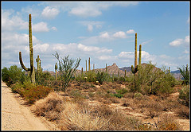

<div><div><div><div><div>
	<div>
	
		<div>
			
				<div>
					
</div>
			

			
			<div>
				<div><p>It's rather difficult to find a decent spot to get a good photograph right now. I wanted to get a shot of clouds rolling in over cactus with mountains in the distance.

I didn't really want to trek too far out into the desert, since it's 100+ degrees (at night). So I drove around in the northern parts of the valley and found a neat little area just off the side of the road.

Hopefully I'll be able to get a better shot of storms/monsoons.


<span><a href="http://www.flickr.com/photos/swilliams/202561918/">Cloudy desert</a>

Originally uploaded by <a href="http://www.flickr.com/people/swilliams/">Krazy Yak</a>.
</span></p></div>
			</div>
			

		</div>
	
	</div>
</div></div></div></div></div>